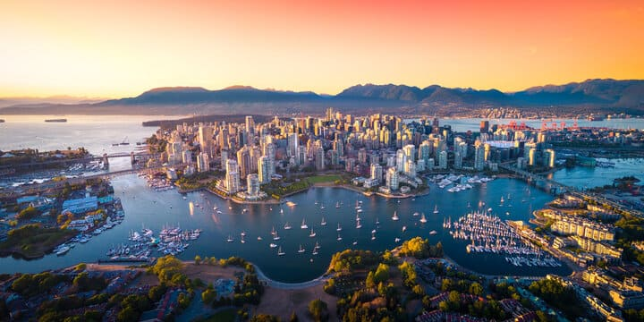
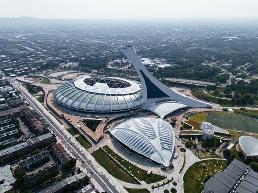
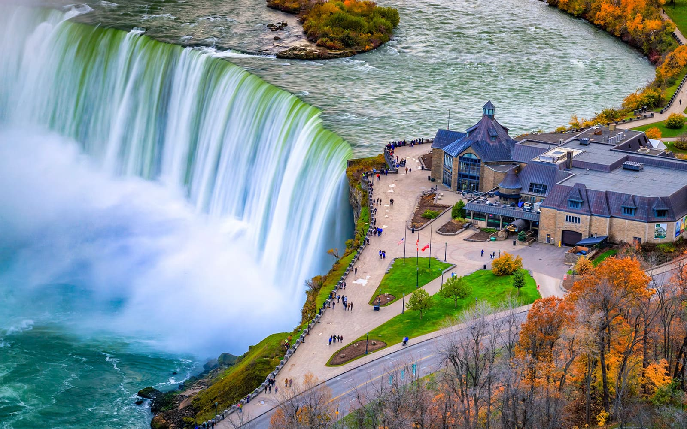

Canada - Land of Natural Beauty

Introduction
Canada is the second-largest country in the world, known for its vast landscapes, diverse cultures, and high quality of life. It stretches from the Atlantic Ocean to the Pacific and up into the Arctic Circle.
From vibrant multicultural cities to pristine national parks, Canada offers breathtaking natural scenery, rich Indigenous heritage, and welcoming communities that attract visitors from around the globe.
Quick Facts
- Capital: Ottawa
- Population: Approximately 40 million
- Language: English and French
- Currency: Canadian Dollar (CAD)
- Best Time to Visit: June–September
Explore Major Destinations
Jump to a specific destination
\r\n
Toronto
Region: Ontario
Toronto is Canada’s largest city and a major economic and cultural hub. It is known for its skyline, multicultural neighborhoods, and vibrant arts scene.
Visitors can explore world-class museums, waterfront attractions, diverse cuisine, and iconic landmarks such as the CN Tower, all while experiencing the city’s energetic urban lifestyle.
Must-See Attractions
- CN Tower - Iconic observation tower with city views
- Toronto Islands - Scenic parks and beaches
- Royal Ontario Museum - Art, culture, and natural history
- Distillery District - Historic area with shops and galleries
- Harbourfront Centre - Waterfront entertainment district
Back to top
Vancouver

Region: British Columbia
Vancouver is a coastal city surrounded by mountains and the Pacific Ocean, offering a unique blend of urban living and outdoor adventure.
The city is famous for its natural beauty, mild climate, and access to activities such as hiking, skiing, and kayaking, all within minutes of the downtown core.
Must-See Attractions
- Stanley Park - Urban park with scenic seawall
- Granville Island - Arts, markets, and dining
- Capilano Suspension Bridge - Forest canopy walkway
- Grouse Mountain - Outdoor activities and city views
- English Bay - Popular beach and sunset spot
Back to top
Montreal

Region: Quebec
Montreal is a vibrant city known for its French heritage, historic architecture, and lively arts and festival scene.
The city blends European charm with North American modernity, offering diverse cuisine, cultural events, and historic neighborhoods such as Old Montreal.
Must-See Attractions
- Old Montreal - Cobblestone streets and historic buildings
- Notre-Dame Basilica - Stunning Gothic Revival church
- Mount Royal - Panoramic city viewpoints
- Jean-Talon Market - Popular local food market
- Montreal Festivals - Music, arts, and cultural events
Back to top
Niagara Falls

Region: Ontario
Niagara Falls is one of the most famous natural attractions in the world, located on the border between Canada and the United States.
The powerful waterfalls attract millions of visitors each year, offering boat tours, scenic viewpoints, and surrounding attractions for all ages.
Must-See Attractions
- Horseshoe Falls - Largest and most powerful waterfall
- Niagara Falls Boat Tour - Up-close waterfall experience
- Journey Behind the Falls - Observation tunnels
- Niagara Parkway - Scenic drive along the river
- Clifton Hill - Entertainment and attractions area
Back to top
Travel Tips for Canada
These tips will help travelers enjoy a comfortable and safe visit to Canada.
- Weather: Dress in layers, as temperatures vary widely by season.
- Transportation: Major cities have reliable public transit systems.
- Currency: Credit cards are widely accepted.
- Etiquette: Politeness and punctuality are valued.
- Nature: Follow park rules and respect wildlife.
← Back to North America Home